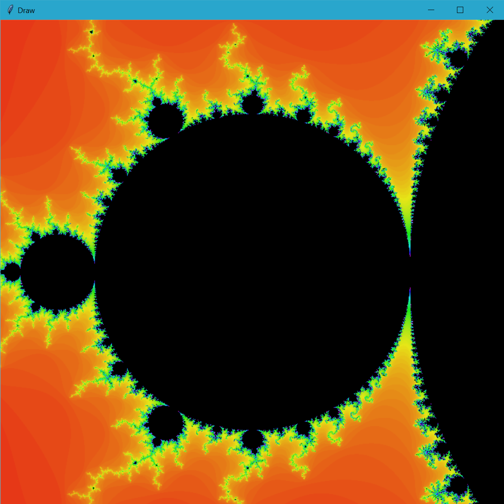
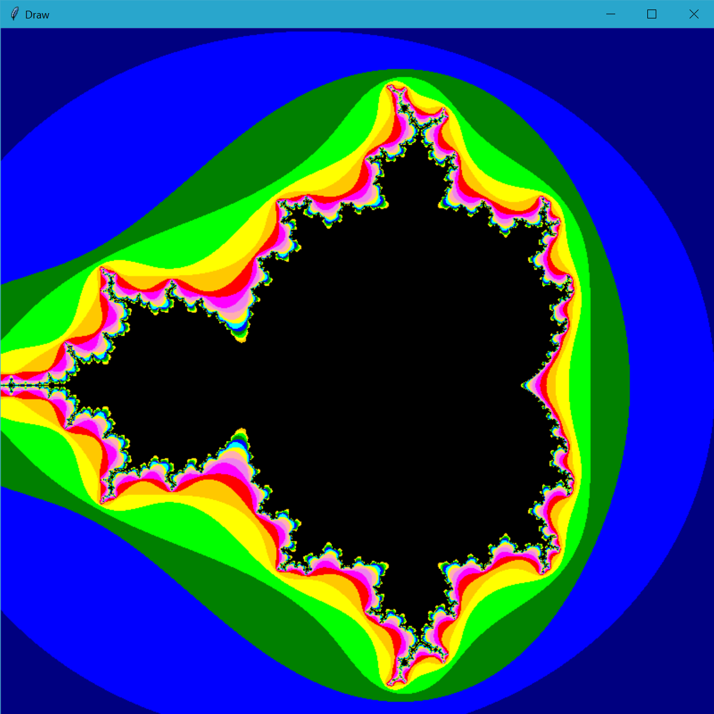
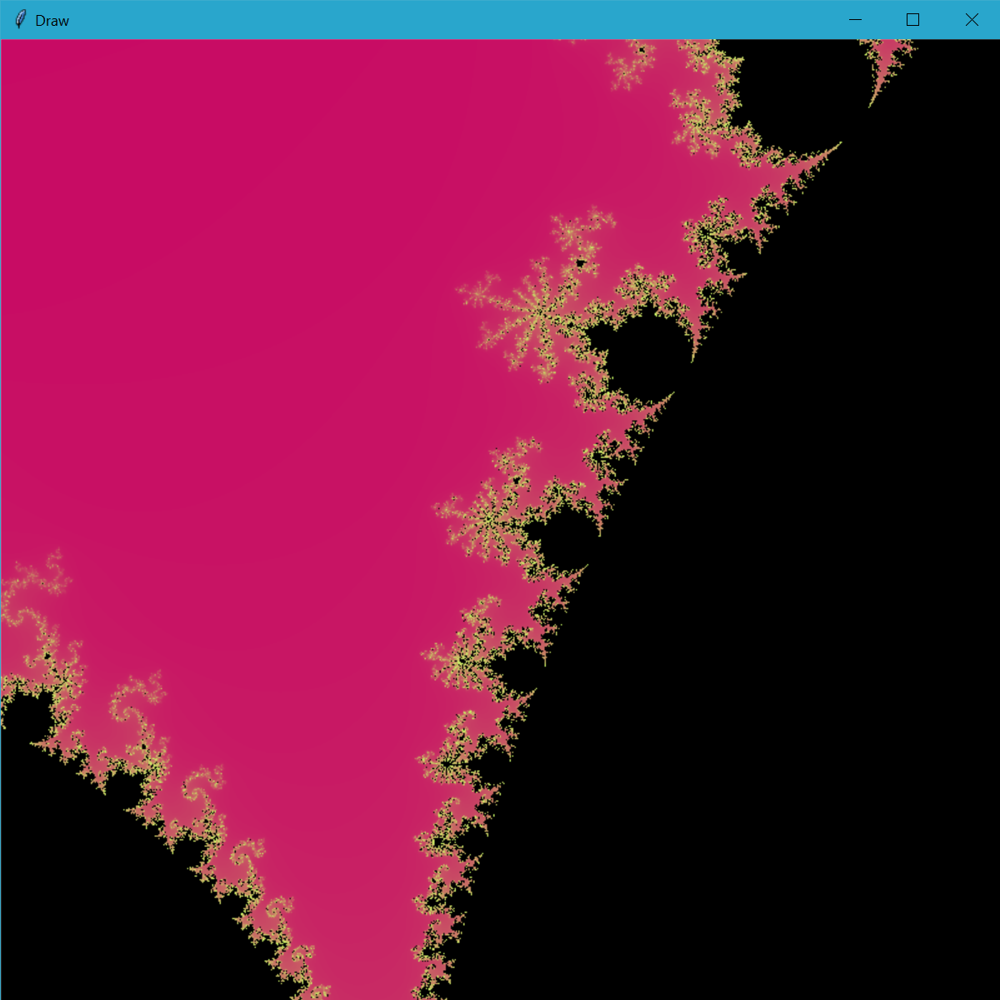
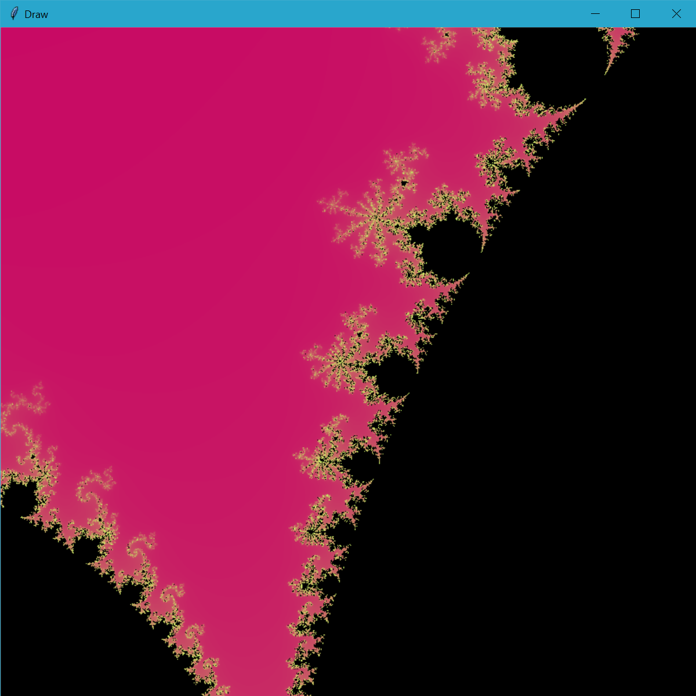
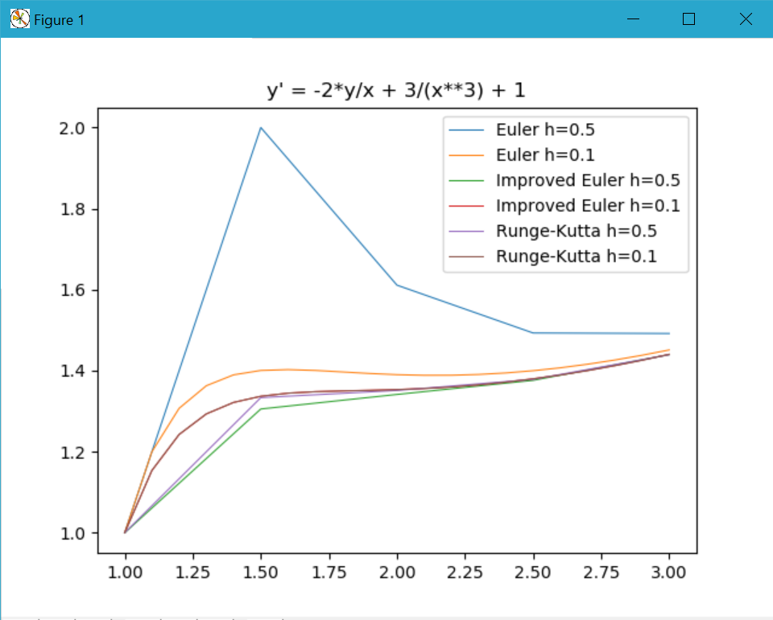

Honorable Mentions
Mandelbrot Set
Out of curiousity, I challenged myself to program a Mandelbrot set. I researched the math behind the Mandelbrot here, but I did not reference any code to create it. Below are some images created by different versions of the Mandelbrot sets I programmed.
 {kind=link}
{kind=link}
 

{kind=link}
Animated Swirl
This video inspired me to recreate the spiral shown at the end of the video. Within the animation, a rounded heart shape can be seen. This shape is nicknamed the heart of mathematics. My animation was first created only a few weeks into my first Computer Science course. My professor found it impressive and encouraged me to create a spirograph simulation as my semester project (found on the main page).
Solve Differential Equations Using Numerical Methods
I created a program that, given a differential equation on a range, it can solve and graph approximate solutions using three methods: Euler's method, the improved Euler's method, and the Runge-Kutta method. Each of these methods can be given a step-size h, to determine the accuracy of these approximation methods. I graphed the solutions using matplotlib, a Python module. Below is a sample of output produced by my program.
{kind=link}
Compare Time of Prim's vs. Kruskall's Algorithm
Together with a classmate, we compared the time to run Prim's algorithm and Kruskall's algorithm on graphs of various sizes and densities. We came to the conclusion that Prim's algorithm gets significantly slower on larger graphs, but doesn't react as much to increased density. However, Kruskall's algorithm reacts to density more than size. We found that Kruskall's algorith has the largest advantage \ on larger sparser graphs. We ran these algorithms on ten randomized graphs and graphed the results below. (In the graph on the right, larger circles mean longer time.)